That's what she said.

Don't ever, for any reason, do anything to anyone for any reason ever, no matter what, no matter where, or who, or who you are with, or where you are going, or where you've been... ever, for any reason whatsoever...

Sometimes I'll start a sentence and I don't even know where it's going. I just hope I find it along the way
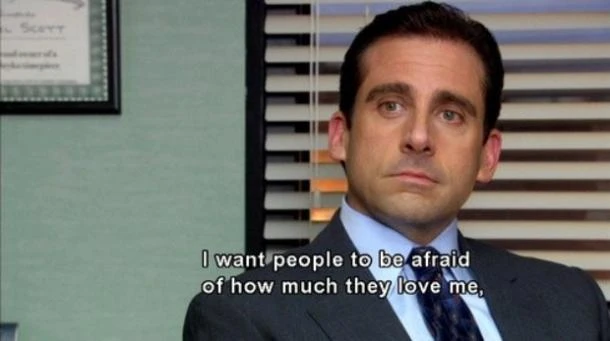Would I rather be feared or loved? Easy. Both. I want people to be afraid of how much they love me
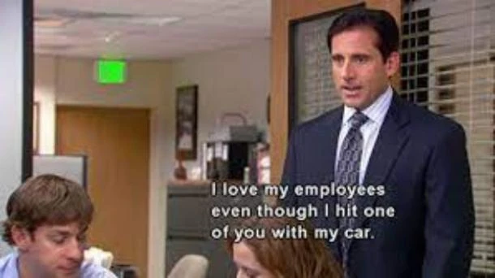I love my employees even though I hit one of you with my car.
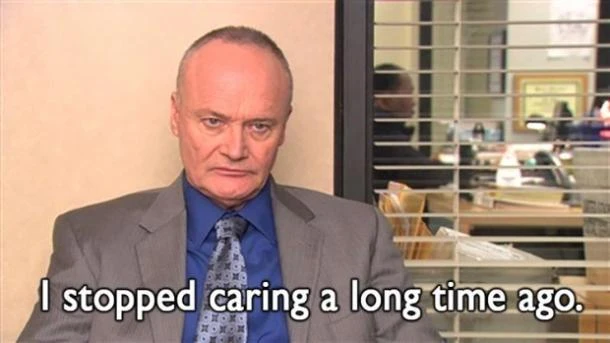I stopped caring a long time ago.

An office is a place where dreams come true

You only live once? False. You live every day. You only die once.
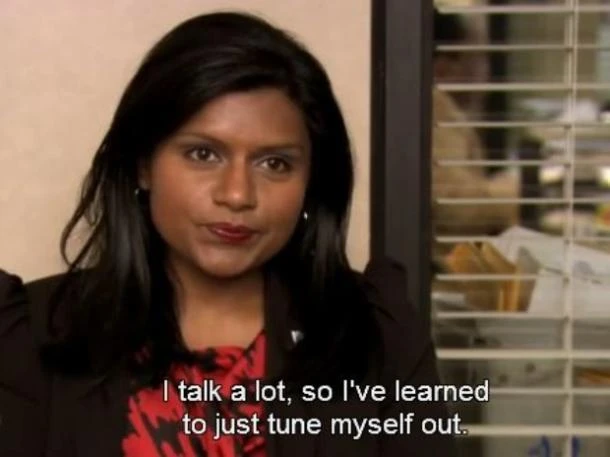I talk a lot, so I've learned to just tune myself out...
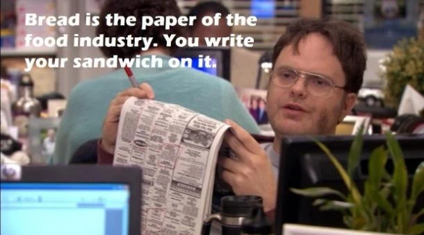Bread is the paper of the food industry. You write your sandwich on it.
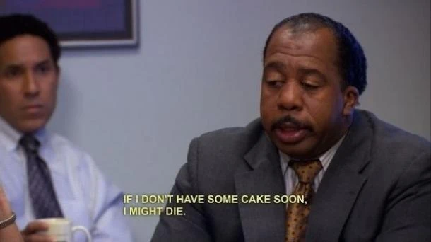If I don't have some cake soon, I might die.
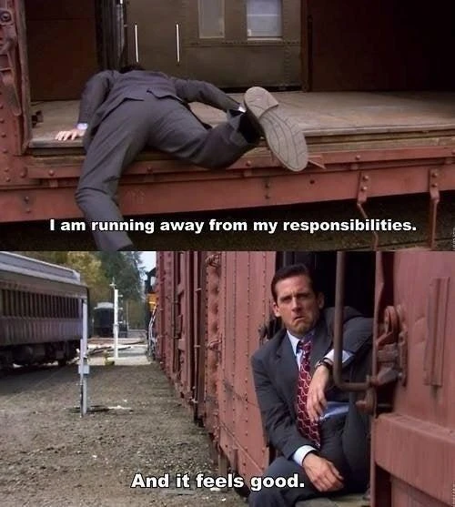I am running away from my responsibilities and it feels good.
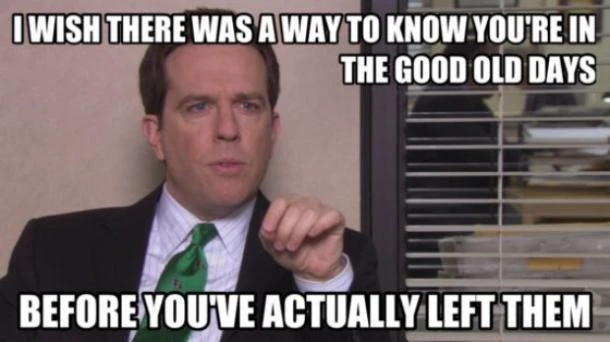I wish there was a way to know you're in the good old days before you've actually left them
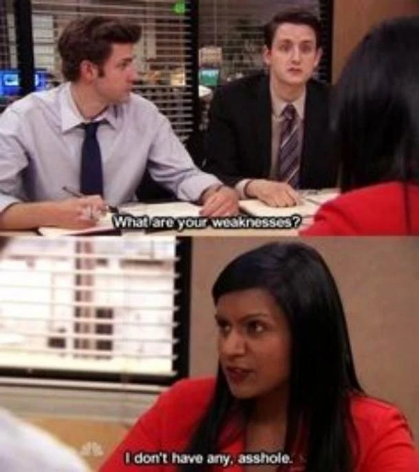What are your weaknesses?" "I don't have any, a**hole.
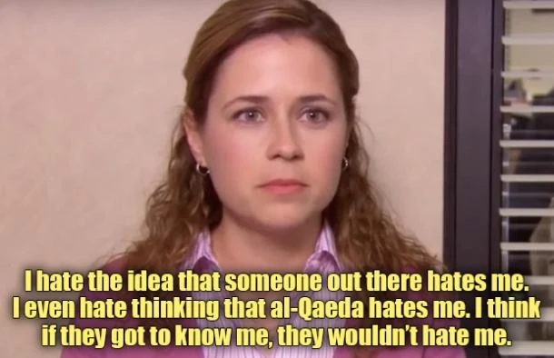I hate the idea that someone out there hates me. I even hate thinking that al-Qaeda hates me. I think if they got to know me, they wouldn’t hate me
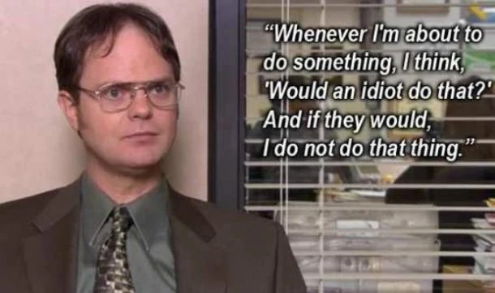Whenever I'm about to do something, I think, 'Would an idiot do that?' and if they would, I do not do that thing.
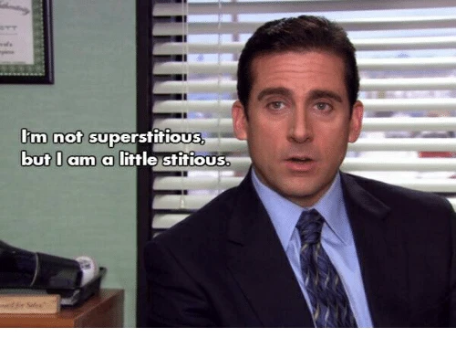I'm not superstitious, but I am a little stitious

I feel like all my kids grew up, and then they married each other. It's every parent's dream.